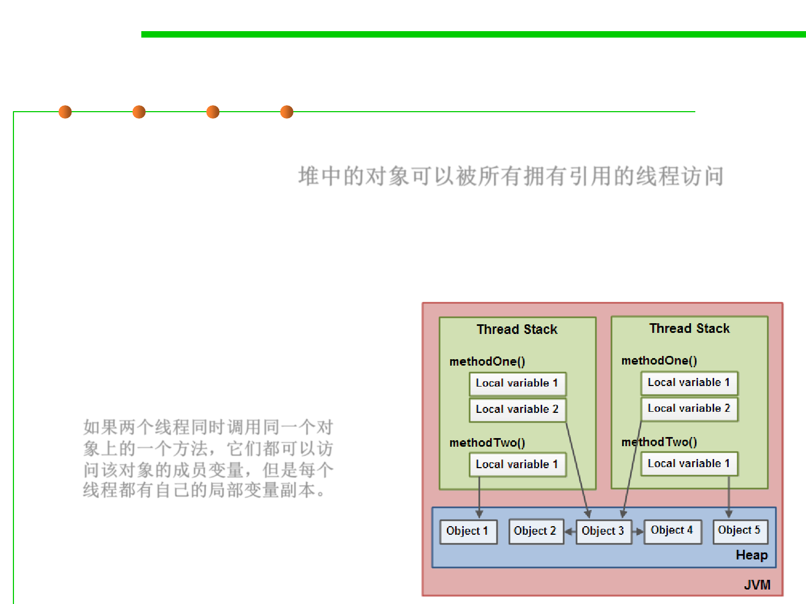

8.1 Metrics, Principles, and Methods of Construction for Performance
Some key points about Java Memory Model
▪ Objects on the heap can be accessed by all threads that have a
reference to the object. 堆中的对象可以被所有拥有引用的线程访问
▪ When a thread has access to an object, it can also get access to that
object's member variables.
▪ If two threads call a method on the same object at the same time,
they will both have access to
the object's member variables,
but each thread will have its
own copy of the local variables.
如果两个线程同时调用同一个对
象上的一个方法，它们都可以访
问该对象的成员变量，但是每个
线程都有自己的局部变量副本。